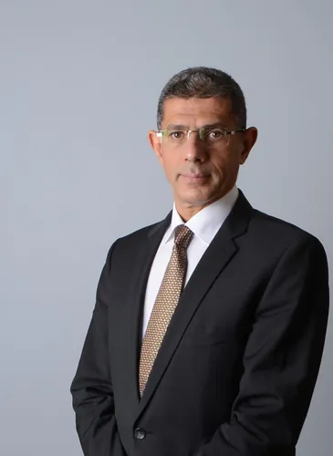

<div class="p-8 mt-12">
    <div class="flex">
      
      <div class="ml-8 flex-1">
        <h2 class="text-3xl font-bold mb-4 mt-8">AFRICAN SPACE SOLUTIONS MARKET</h2>
        <p class="text-red-700 mb-4">
           
            Du 02 décembre au 06 décembre 2024,  Abidjan - Côte d'Ivoire
        </p>
        <div class="flex items-center mt-12  mb-4">
          
          <div>
            <h3 class="text-xl font-semibold"> Thème : Gestion des ressources naturelles et des catastrophes <br></h3>
            <p class="text-gray-600">
                Cet événement couvre tous les aspects du domaine spatial et proposera des solutions innovantes. <br>
             De nombreuses autorités et chefs d'entreprise seront présents. <br> Ne manquez surtout pas cette opportunité !
            </p>
          </div>
        </div>
        <button class="bg-red-900 text-white mt-12 px-6 py-2 rounded-full shadow-md" [routerLink]="['/home/register']">Insrivez-vous maintenant</button>
        <a href="https://otif-africa-space.com" class="ml-10 bg-red-900 text-white mt-12 px-6 py-2 rounded-full shadow-md">Visitez notre site </a>

        <div class="flex items-center mt-4">
          <div class="flex -space-x-4">
            
            
            
            
          </div>
          <span class="ml-4 text-blue-500 font-bold">4+ Intervenants</span>
        </div>
      </div>
    </div>
  </div>
  